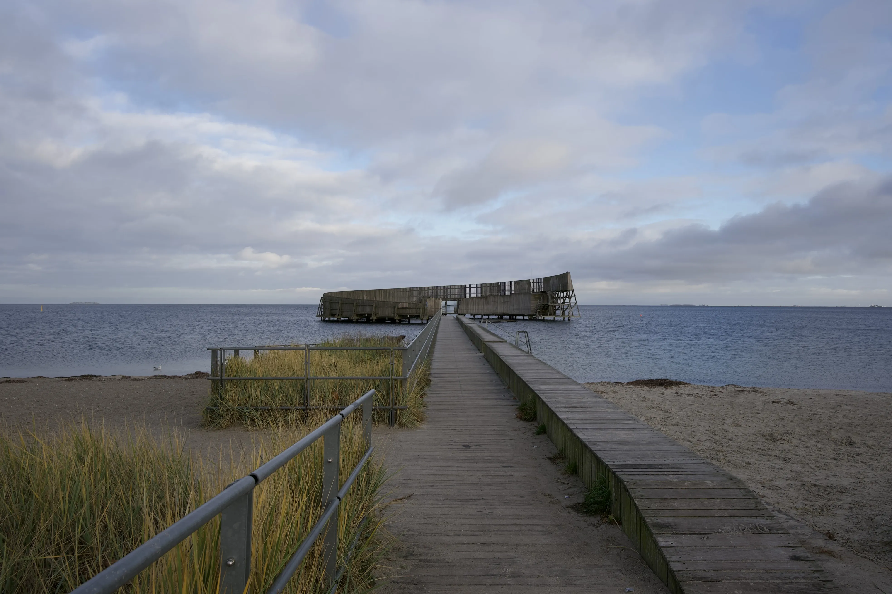

HUNTER'S PASSION
VINTERBADNING
Hunter er en passioneret vinterbader, som har gjort den kolde hobby til en essentiel del af sin livsstil. Hans fascination for vinterbadning startede, da han første gang stødte på Wim Hof, også kendt som "The Iceman," på YouTube. Wim Hof er kendt for sine utrolige præstationer i ekstreme kuldeforhold og har inspireret millioner verden over til at omfavne kulden som en kilde til fysisk og mental styrke. For Hunter var det et øjeblik af klarhed – han besluttede sig for at prøve det selv.
Hunter Dellagatta
GALLERI
